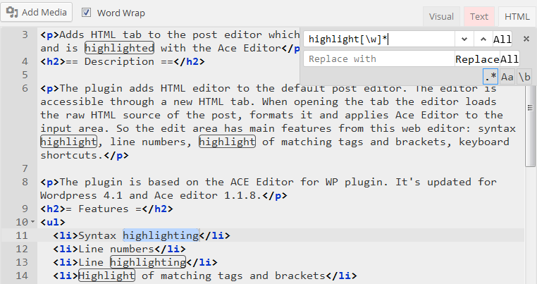
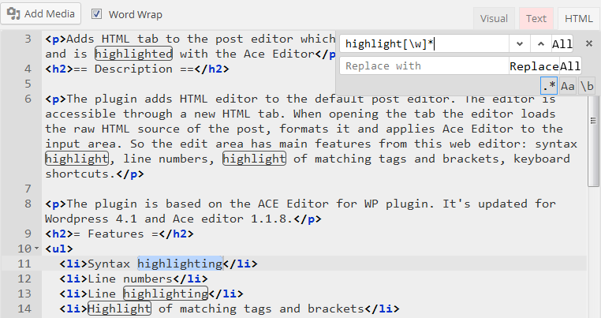

Contacts
Projects
Tricks and tutorials on different computer topics based on my own computer experience.
Created to practice the Wordpress framework, its themes and plugins development.
Project features
- advices (tweaks) are divided by categories: Windows, Programs, etc.
- high-quality screenshots for more comfortable site navigation
- detailed steps explanation with example images
Development features
- created a custom Wordpress responsive theme Starter Point
- created additional plugins for the front-end and back-end to help editing and organizing the contents
- created colored categories within the theme
- multi-language support
- program code highlight using a customly modified Prism highlighter plugin, [plugin source] [example]
A simple interpretation of a blog allowing users to register and
add new articles which will be shown in one common category on the main page.
The site was created to practice the Joomla! CMS.
Project features
- register a new user and edit own profile
- create and edit articles
- filter articles list by author, sort by date, title, author, [example]
- set articles per page count
Development features
- created a custom Joomla responsive theme
- added an authors filter on the front-end
- added an articles-per-page filter on the front-end
- added additional columns in the List view table
- added a List and Blog view switcher in the user's own articles, [example]
- created additional action buttons to Publish, Unpublish, Delete articles in the user's articles page
- created a top fixed menu with inline login form, [example]


A simple site constructed manually using PHP, MySQL, CSS, jQuery, AJAX, Bootstrap.
Used to test and practice web technologies.
It is a basis of the Simple Blog website project.
Project features
- register new users and edit profile
- add new articles (news) with one image and text
- navigate between articles
- export articles to a CSV file
- article preview before saving
- news appear on the main page in the blog-like order (newest first)
Development features
- use of PHP classes structure
- inline image upload (update without page refresh)
- inline validation of input data on register using AJAX
- pages navigation for articles list
- password hashing on registering a new user


The program scans files and subfolders and saves the resulting tree into selected formats (Text, HTML).
For testing purposes the project was created using different technologies:
Project features
- filter files by extension
- filter directories by name
- export files/directories list to a text file and to a tree structure
- the exported tree can be viewed and navigated with the Tree Viewer tool or as a HTML page
- save/restore last used settings when the program exits/starts
Development features
- recursive filesystem scanning
- use of a separate thread for background scanning
- use of progress bar to show current percent of scanned folders
- use of JSON format to store directory structure
- implementation of a custom JSON serializer/deserializer to store/retrieve data


Multilanguage dictionary which uses Lingvo LSD format
The program was created as a basis for the Android Home Dictionary application.
It can be used as a desktop dictionary and as an indexer to create index files used by the mobile app.
Project features
- read and index dictionaries in LSD format
- select a language pair from the dropdown lists
- search for a word translation within the selected languages
- output formatted dictionary article
- resulting article contains word translation from all the dictionaries in the selected language pair
- navigate through articles using internal links
- quick word search
Development features
- decoding of LSD dictionaries and creating of quick search indexes
- recognition of system and user dictionaries
- use of JNI with DLL libraries adapted using a C++ project
- multiple encodings support using the UTF-16 encoding
- saving of indexed directions to a config file
- use of a custom markup parser to create an HTML code for the articles

Creates and organizes a university timetable with export to an Excel table.
The program was created for the Master's thesis.
Project features
- edit study subjects, teachers, rooms, hours data
- resolve timetable conflicts between groups
- save changed data to a MS Access database
- export timetable to an XLS file
- use previously filled data
Development features
- use of JDBC to connect to MS Access MDB databases
- use of POI library to write results to a XLS file
- creation of relational database structure including 4 tables and connections between them
- use of Genetic Algorithm in the timetable construction


Java version of the List Folders multilanguage project.
Soft keyboard for small screens.
Project features
- fills the whole width with the keys to print text comfortably
- switch between two languages
- wide set of symbols
- keys for cursor moving and text selection
- alphabetic order of keys


Provides quick access to frequently used information.
Project features
- includes 4 sections to store different types of information
- the Personal Info part allows to show any data like phone numbers, emails, addresses and copy it to the clipboard
- the Timetables section allows to add notes containing times of transport departure/arrival or shops opening/closing
- the Notes section gives an ability to add any number of custom notes to store important information
- the Quick Note section shows a single note with information that needs to be accessed frequently
- a built-in editor allows to change data in each section and import text from an external file
- possibility to import/export a database with all the information to backup/restore/transfer the data
Development features
- use of sidebar menu (drawer) to easily switch between sections
- use of a custom FileChooser dialog to select a text file or database to import data from
- database management using the SQLiteOpenHelper class which works with the SQLite database technology
- app style customization to get a desired interface look & feel
- implementation of a Toolbar using the support v7 appcompat library
- customization of the ListView widget items


Status bar notification which shows left RAM in MB.
Development features
- the RAM notification is updated by a background service every second
- the amount of memory is shown using the digits image composition via XML drawable files

Mobile multilanguage dictionary which allows to add multiple dictionary files in Lingvo LSD format.
Developed from the desktop version Home Dictionary in Java to allow mobility and ease of use.
For slow Android devices it is better to use the desktop version to index dictionaries for the first time.
Project features
- read and index dictionaries in LSD format
- select a language pair from the dropdown lists
- search for a word translation within the selected languages
- resulting article contains word translation from all the dictionaries in the selected language pair
- output formatted dictionary article
- zoom article content with wrapping to allow comfortable viewing
- navigate through articles using internal links
- quick word search
Development features
- decoding of LSD dictionaries and creating of quick search indexes
- use of background task for the indexing process to prevent freezing of the main UI thread
- recognition of system and user dictionaries
- use of JNI (Android NDK) with SO libraries
- multiple encodings support using the UTF-16 encoding
- saving of indexed directions to a config file
- use of a custom markup parser to create an HTML code for the articles
- use of a custom CSS stylesheet file to easily control the look of articles


Presents conjugation forms for a large amount of verbs.
Several applications designed for different languages:
- Spanish (11 800 verbs)
- English (11 100 verbs)
- German (9 000 verbs)
- Italian (7 700 verbs)
- French (6 900 verbs)
- Latin (3 000 verbs)
Project features
- search autocompletion which may be turned on/off
- colored style for different verbal moods
- wrapping of article content within the screen width
- buttons to navigate to the next/previous verbal moods
Development features
- use of SQLite database obtained from a separate Qt project with all verb data
- use of HTML and CSS template files to easily change the article look
- use of extended Unicode encoding for diacritics in european languages
- manually adjusted autocompletion feature which is toggled with a checkbox button
- javascript injection for the buttons actions
- use of background task for the verb search action


Allows to create a set of folders from a list in a specified directory.
Developed using Qt4.

Loads and saves the Path Environment Variable in live mode (without restart).
Developed using Qt4.
Project features
- loads the Path Environment Variable from the Windows Registry
- saves text from the edit field to the Path variable
- updates the environment so that new processes use the changed Path
- comfortable work with F1/F2 keys
- display Path keys in lines for the quick and easy editing
Development features
- read/write Windows Registry keys using Qt and C++ instruments
- send a broadcast message to all windows to update the Path value immediately
HSV color selector with conversion to HSV, RGB, CMYK, Hex models, color sliders and spinners.
Developed using Qt4 and Qt5.
Project features
- Hue, Saturation, Value selectors
- conversion of selected color to text represented in the text fields
- buttons to copy color values and paste a Hex value
- color sliders and spinners for 3 color models (HSV, RGB, CMYK)
Development features
- developed using the MVC design pattern
- implementation of custom graphics to draw sliders and the selector pointer
- extensive use of mouse events (press, drag, wheel press & drag, scroll)
- development of custom inner widgets

Android device simple file manager.
Developed using Qt4.
Project features
- browse and navigate the Android device filesystem
- get basic file/folder information
- copy files from Android
- navigate using Left/Right arrows
- no need of busybox nor root
Development features
- use of basic adb commands: shell ls, pull
- customized table view
- work with the QProcess class
- encoding fixes to display file/folder names containing non-standard characters
- smart size units formatting (B, KB, MB, GB)
- use of a background thread to show copy progress

Splits text files to smaller ones using the lines count parameter.
Developed using Qt4.
Project features
- allows to set select an input file, output directory and output filename pattern
- allows to set lines count which indicate the maximum lines number the the resulting subfiles will contain
- requires input text files to be UTF-8 encoded and creates correct UTF-8 encoded output
Development features
- correct functioning with paths containing forward and backslashes
- the core functionality uses simple C++ operations

Allows to download HTML pages from Internet.
Developed using Qt4.
Project features
- download HTML source page without resources
- search for a term in Google and download the results page as plain HTML
- useful for slow Internet connections
- allows to get only the main page content without loading heavy resources (images, styles, scripts)
- incremental filenaming which allows to get a page file without specifying the name
- allows to open the last downloaded page in browser
Development features
- use of the QtNetwork module
- use of Regular expressions
- download progress logging
- percent-encoding support and fix

Qt version of the List Folders multilanguage project.
Development features
- use of MVC design pattern
- implementation of custom TreeModel class for the Tree Viewer subwindow
- use of a custom recursive tree structure
A simple responsive Wordpress theme.
It is lightweight and highly customizable.
The full description with all features may be seen in the Readme file.
The theme was first developed for the PC Advice website and extended for a wider use.
Project features
- categories are organized as a table of post titles, [example]
- two menus: header and footer menu, [example]
- colored categories, [example]
- customizer options allow to choose one of the predefined color schemes or change custom theme colors
- add left/right sidebar or disable it to show the content in one column
- possibility to add custom CSS to pages, [example]
Development features
- extended Customizer allows to change colors, add custom CSS text, adds Most viewed posts option for the main page
- used a set of plugins: Ace Editor, LazyLoad, Superfish, Masonry, Enquire
- multilanguage support using the Poedit application
- use of the LESS technology for the effective and easy CSS compilation
- development of a custom Options page for the theme, [example]
- development of a custom content type which shows articles in a table (Category view)


A plugin which adds the HTML tab to the post editor which shows the raw source of the page and is highlighted with the Ace Editor.
Project features
- syntax highlighting
- line numbers
- line highlighting
- highlight of matching tags and brackets
- syntax checking
- multicursor
- Ace Editor keyboard shortcuts
- search box
Screenshots
- HTML view of the post, line highlight and matching tag highlight.
- Multicursor and highlighting of found occurrences of the selected word.
- Search box with RegEx mode (searches for the word with different endings).
 

A plugin which adds the Pre and Code buttons to the TinyMCE post editor toolbar with customizable shortcuts.
Project features
- the Pre button toggles the preformatted style (<pre> tag)
- the Code button toggles the code style (<code> tag)
Development features
- custom shortcuts for buttons in the posts editor toolbar
- plugin settings in the admin panel allowing to change shortcuts by pressing a key combination


A plugin which adds an advanced menu for the Joomla 3 Admin side.
Based on the default mod_menu module.
Project features
- allows to open menu items on mouse hover action (instead of clicking)
- select existing components configurations from the menu
- view all the frontend menu items in the Menus item without entering the Menus component page
- view the list of plugin folders and appropriate plugins inside them
- view the list of the Styles and Templates views
- show the status of different components, plugins, menu items (disabled/enabled)
- the menu is always active (the default deactivates when editing an article)


A plugin which adds a menu module with the inline login form on the right side.
Project features
- the module is a mix of the default mod_menu and mod_login modules
- as the default Menu module allows to select menu to display in the module
- from the Login module has an option of login/logout redirect menu items

The addons are small plugins for the Firefox browser that give additional functionality to the default browser features.
The source code uses mainly Javascript, CSS, Firefox specific API and XUL markup.
Adds a Bookmarks sidebar button to the Toolbar Palette.
The button toggles the bookmarks panel on the left (equivalent to Ctrl+B shortcut).
Primarily created for Firefox 29+ which don't have a button with this functionality.
Development features
- restartless addon
- a simple checkbox button implementation which uses default browser command to open the panel
- a customized icon binded with a CSS sheet

Adds a Regex checkbox to the findbar in Firefox 25 to 35.
This allows to search text on a page using Regular expressions.
Project features
- customized colors for text and search background for more comfortable use
- additional shortcuts to close/open the search toolbar and for backward search
- exact number of matches (instead of the "100+" message)
- find all functionality with regular expressions
Development features
- integration into the standard search toolbar using XML binding technology
- recursive document scanning for the forward and backward text search
- intention to minimize possible errors in the incorrect use of regex queries
- custom text selection model
- exploration of the Firefox source code


The addon provides additional keyboard shortcuts to close unneeded browser tabs.
Project features
- the shortcut Alt-W - closes other tabs except the current one
- the shortcut Ctrl-Alt-W - closes all tabs to the right of the current one
- the shortcut Shift-Alt-W - closes all tabs to the left of the current one
Development features
- implementation of a custom jQuery-like code structure for easier use of Javascript methods
- use of standard Firefox API and custom algorithms for the provided actions
Adds buttons to the Toolbar that toggle Images and Javascript loading when a webpage is opened.
Development features
- development of two buttons which act like checkboxes and change its color on toggling
- implementation of preference observer which is used to display correct state of buttons in multiple browser windows


Adds a toolbar button, a menu item and a shortcut that allow to restart the browser.
The default shortcut is Alt+R.

This addon adds shortcuts for bookmarks in the Bookmarks Toolbar.
This allows to open desired bookmarks much faster and more comfortable.
Project features
- Alt+1..9 shortcuts open the first 9 bookmarks in the same tab
- Alt+0 opens the 10th bookmark
- Ctrl+OS+1..9, 0 open first 10 bookmarks in a new tab
- possibility to change default shortcuts modifiers (Alt, Control, OS)
- open bookmarks independently of the visibility of the Bookmarks Toolbar
- open folders which have positions corresponding to the pressed number keys
Development features
- custom bookmarks parser which determines correct positions of folders/links
- implementation of a folder opener (which acts like a popup menu)
Adds a customizable homepage panel "My Panel" with the grid layout.
Project features
- load any number of custom links with/without titles
- loaded links may be used like bookmarks to open frequently used pages
- possibility to edit and text file on an Android device and update the panel using that file
Development features
- use of a file picker to select a text file with links
- use of a stock file IO provided by the Firefox Android API
- use of the XMLHTTPRequest class to asynchronously retrieve text data from an input file
Adds the Export/Import Tabs menu items.
These commands allow to save a text file with current tabs addresses and then restore the opened tabs from that file.
Project features
- Export Tabs - saves current tabs addresses to a text file in the "/sdcard/Android/tabs_backup/" folder
- Import Tabs - allows to select a file with addresses which will be loaded in new tabs
- the menu items are in the Tools top-level menu


Adds the New Tab button to the URL bar.
Project features
- a new tab is opened as a homepage tab
- long press closes the current tab

Adds a set of Close Tab buttons to the URL bar.
Project features
- Close Tab command - closes the current tab, closes all tabs if long pressed, quits the app if pressed on the last tab
- Close All Tabs command - closes all tabs and displays the homepage
- Close Other Tabs command - closes all tabs except the current one

Adds the Copy/Paste buttons to the URL bar.
Project features
- Copy Location command - copies current page address
- Paste And Go command - pastes the clipboard contents into the URL bar and goes to its address
- Paste In New Tab command - creates a new tab and goes to the location taken from the clipboard

Adds a checkbox which toggles the possibility to open all links in new tabs.
The addon works for already opened tabs and new ones.
Adds menu items that toggle Images and Javascript loading when a webpage is opened.
This is the Android version of the Toggle Images and JS desktop addon.
Development features
- development of two buttons which act like checkboxes and change its labels on toggling
- implementation of preference observer which is used to display correct state of buttons in multiple browser windows